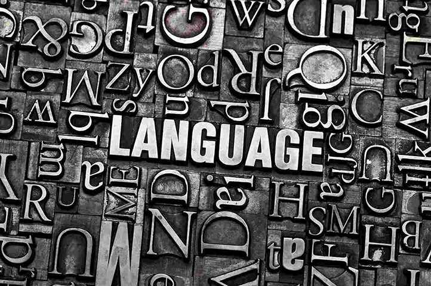

Co robimy
Jesteśmy zdania, że wszystkie teksty należy tłumaczyć tak jak poezję i literaturę. Bierzemy pod uwagę nie tylko dosłowną treść, ale przede wszystkim to, co autor chciał przekazać i jakie wrażenia chciał wywołać. Ma to szczególne znaczenie w przypadku wszelkich publikacji (tych papierowych i tych elektronicznych) o charakterze informacyjnym, marketingowym czy naukowym. Uważamy, że nie da się dobrze przetłumaczyć tekstu wyłącznie w oparciu o komputerowe narzędzia wspomagające tłumaczenie. Doceniając praktyczność ich stosowania, stawiamy przede wszystkim na żywych ludzi. Uważamy, że tylko ktoś, kto posługuje się danym językiem od urodzenia, żyje i funkcjonuje w kraju, w którym ma się ukazać publikacja, a najlepiej jeszcze zna branżę, której publikacja dotyczy – jest w stanie zbliżyć się do perfekcji. A na tym nam zależy!
-

Strony internetowe i ich lokalizacja
Zajmujemy się lokalizacją treści publikowanych w internecie, co oznacza, że przygotowujemy je pod kątem właściwej interpretacji przez docelowych odbiorców. Ponadto, doradzamy w zakresie wyglądu stron skierowanych na określone rynki. Wykonujemy też tłumaczenia stron bezpośrednio w kodzie źródłowym.
-

Publikacje drukowane i elektroniczne
Jesteśmy przygotowani, ażeby dostarczone i przetłumaczone teksty przygotować do publikacji w dowolnej formie: witryny internetowej, tradycyjnej drukowanej broszury lub książki, książki w każdym z popularnych formatów elektronicznych, a nawet audiobooka czy materiału wideo.
-
Dostosowanie treści do lokalnych tradycji
Zawsze, jeszcze przed przystąpieniem do tłumaczenia lub przed przygotowaniem publikacji przeprowadzamy szczegółowe analizy w oparciu o dostarczony materiał, charakterystykę docelowego odbiorcy, lokalnych tradycji i zwyczajów. Chcemy wiedzieć, gdzie lepiej unikać określonych skojarzeń, wizerunków, czasem nawet kolorów.
Jak działamy
Po pierwsze ustalamy z klientem przedmiot i zakres wspólnego projektu. Następnie, na podstawie poczynionych ustaleń przygotowujemy program oraz harmonogram działania. Ta faza, w zależności od zakresu projektu, może potrwać od kilku dni, nawet do jednego miesiąca. Dzieje się tak, ponieważ wysoką jakość naszych tłumaczeń i publikacji opieramy na bliskiej współpracy z profesjonalistami zlokalizowanymi w różnych krajach świata. Ostateczną wersję projektu zawsze weryfikuje i zatwierdza osoba będąca tłumaczem, korektorem lub specjalistą w danej branży, dla której język docelowy publikacji jest językiem ojczystym.
Kontakt
Jeżeli myślicie Państwo o publikacji w sieci lub na papierze treści wymagających tłumaczenia i zależy Wam, by docelowy odbiorca Was zrozumiał – jesteśmy do dyspozycji. Prosimy o kontakt telefoniczny lub mailowy w języku angielskim. Jeżeli jest to niemożliwe, prosimy przesłanie wiadomości e-mail z podaniem w temacie wiadomości języka jego treści.
Email: biuro@akitatranslations.comTelefon: +48 601 760 591